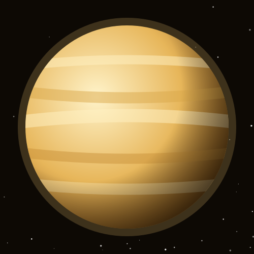
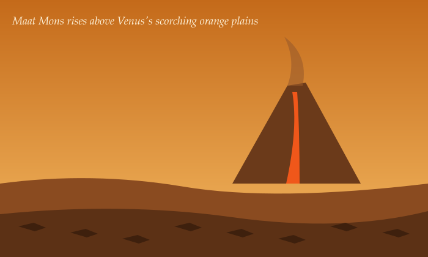

Beauty with a Burn
Venus is named after the Roman goddess of love and beauty. After the Moon, it is the brightest natural object in the night sky.
Venus is almost the same size as Earth, but underneath its thick clouds of sulfuric acid lies a crushing, oven-hot world.

Venus Facts
- Hottest planetIts surface is about 465 °C, hot enough to melt lead, because its thick CO₂ atmosphere traps heat.
- SizeAbout 12,104 km across, almost Earth's twin.
- DistanceAbout 108 million km (0.72 AU) from the Sun.
- Backwards spinVenus rotates in the opposite direction from most planets.
- Long dayOne spin takes 243 Earth days, longer than its 225-day year.
- MoonsNone.
Venus Fun Facts
Think you know Venus? Open the pop-up for a random fun fact, then keep clicking for more.

A Volcanic World
Venus has more volcanoes than any other planet. Its tallest, Maat Mons, rises about 8 km above the surrounding plains.
The Soviet Venera landers sent back the only photos ever taken from Venus's surface. The heat and pressure destroyed each one within about two hours.